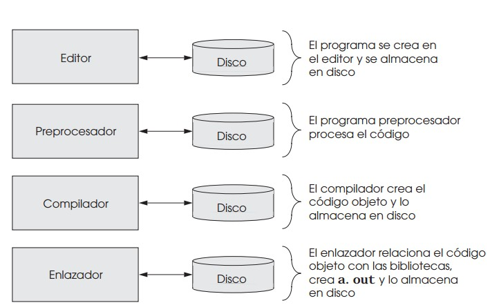

| Conseptos basicos de programación. |
- Instrucciones:
- Son como recetas para decirle a la computadora qué hacer. Imagina darle pasos específicos para hacer una tarea..
- Palabras clave:
- Son palabras especiales que la computadora reconoce. Son como las señales que indican a la computadora qué acción tomar.
- VAriablers:
- Son como cajitas donde puedes guardar cosas. En programación, estas cajitas se llaman "variables" y puedes poner números, palabras u otras cosas dentro.
- Tipos de variables:
- Algunas cajitas solo pueden contener números, otras solo palabras y algunas pueden tener de todo. Estos son los "tipos de datos".
- Condiciones:
- A veces, quieres que la computadora haga algo solo si se cumple una condición. Esto es como darle instrucciones dependiendo de una situación
|
 |